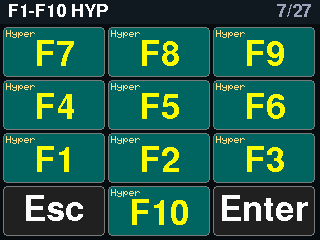
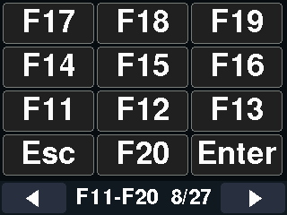
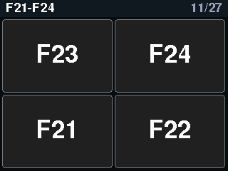
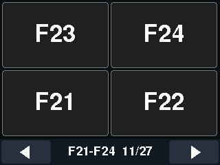
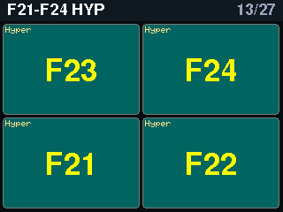

5 F1-F10 4×3
The plain function keys F1 to F10, with Esc and Enter in the bottom row. The numeric layout mirrors a keypad: 7-8-9 on top, 1-2-3 at the bottom.


 Classic: Function keys
Classic: Function keysPages 5, 6, 7, 8, 9, 10, 11, 12, 13 of 27 in the classic interface.
F1 to F24, each in a plain, a Meh and a Hyper flavour. Pages 5, 6, 7, 8, 9, 10, 11, 12, 13, classic interface.
The plain function keys F1 to F10, with Esc and Enter in the bottom row. The numeric layout mirrors a keypad: 7-8-9 on top, 1-2-3 at the bottom.
F1 to F10 with the Meh modifier (Ctrl+Shift+Alt) so they can be bound to global shortcuts without clashing with applications.


F1 to F10 with the Hyper modifier (Ctrl+Shift+Alt+Win), the other family of global-shortcut chords.


Function keys F11 to F20, laid out like the F1 to F10 page.


F11 to F20 with the Meh modifier.


F11 to F20 with the Hyper modifier.


The rarely used F21 to F24 as four large tiles.


F21 to F24 with Meh.


F21 to F24 with Hyper.
